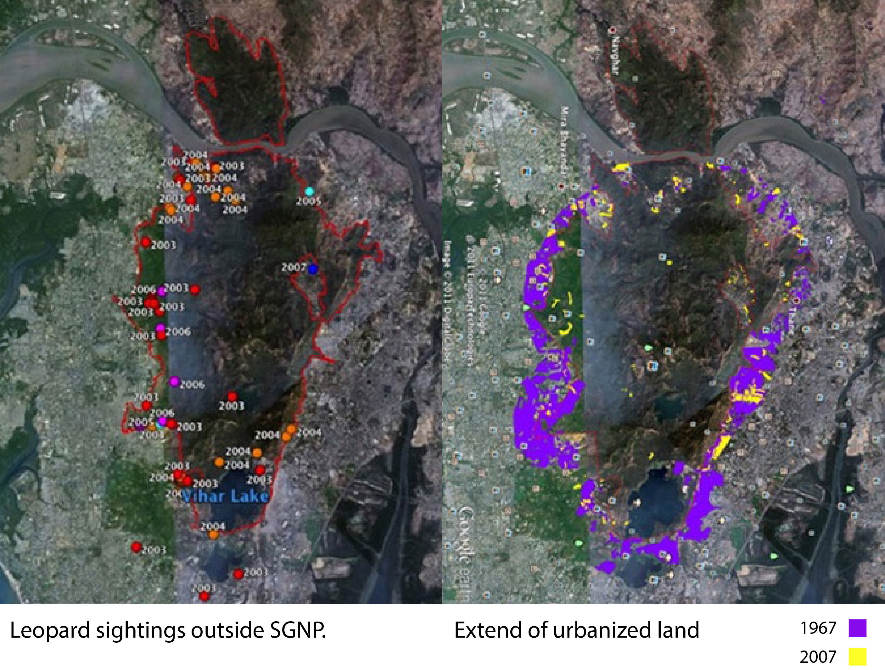
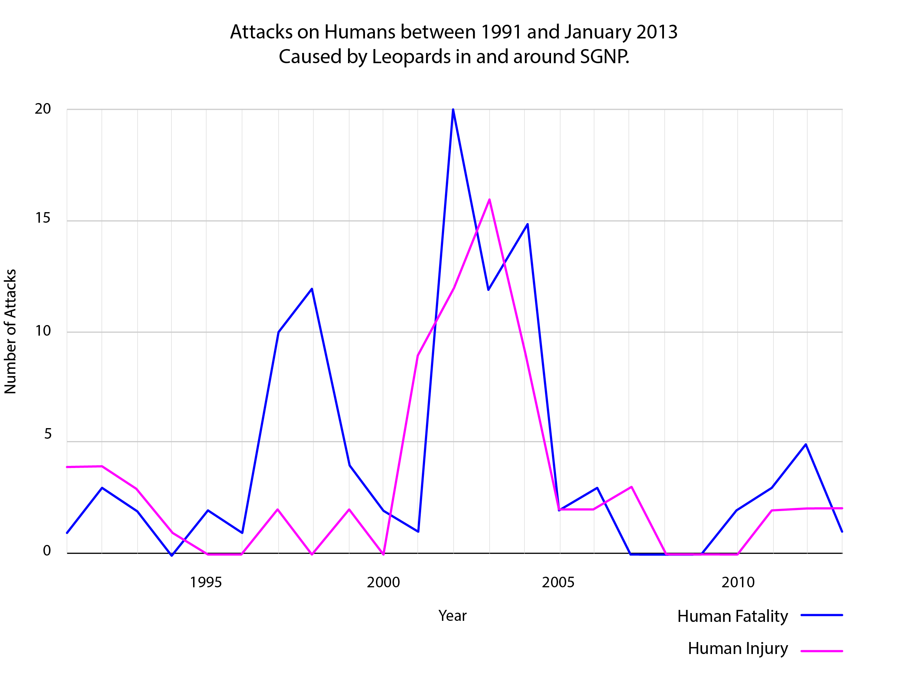

Pages from a report identifying male leopards seen active near the Aarey Colony.
Source: Mumbaikers for Sanjay Gandhi National Park (p. 21-22)
Source: Mumbaikers for Sanjay Gandhi National Park (p. 21-22)
Introduction
On August 2, 2017, the Hindustan Times reported that Film City, a multi-studio complex in Goregaon, was ordered to halt filming on eight of its sets after a series of leopard attacks on local children left the Maharashtra Forest Department scrambling to locate and trap the animal.
1
The studio complex is located at the edge of Sanjay Gandhi National Park, a 40 square mile reserve that attracts over two million visitors a year and is home to the largest leopard population in India. To capture the animal suspected of carrying out the attacks, the forest department installed 15 motion detectors and cameras and arranged a rotation of 30 extra “forest officers” to patrol the Goregaon area. Despite these orders, various actors and representatives of the studio proudly announced that they had decided to keep shooting. Gulki Joshi, a famous Indian actress, told the Times, “My set is the last set in the Film City beyond which there are barricades. I heard that shooting of some shows have been halted but I have been shooting just fine since morning. There has been no problem for us yet.”This article illustrates a range of tensions that I aim to explore in my project, which analyzes Sanjay Gandhi National Park as a public infrastructure of Mumbai that is highly contested—conserved, defended, policed, encroached upon, transgressed, and inhabited—by a range of living subjects, both human and non-human, who make differential claims to city, its “natural” resources and green spaces. How do we understand a park like SGNP as infrastructure, a managed resource integral both to the city’s function and identity—its imagination of itself? Who uses this infrastructure and, just as importantly, who is supposed to use this infrastructure? What narratives do different stakeholders such as media, park and city officials, and middle-class environmentalists advance in order to claim the park as their own and not, in contrast, the domain and livelihood of the 50,000 people who live on Forest Department lands “illegally”? What tactics of displacement, surveillance, and harassment accompany these narratives in order to police and enforce the “borders” of the park, to keep the leopards in and the people out?
This project therefore takes a more exploratory form, combining inquiries into visual and media culture with historical research, ecocritical theory, and digital mapping techniques to offer a narrative of the “human-leopard” conflict in the park that troubles normative discourses foregrounding poverty as the singular threat to environmentalism, urbanity, and modernity in Mumbai. This project is split into three parts. The first part synthesizes a number of theoretical frameworks to illuminate how we might understand the park as public infrastructure to which various stakeholders have differential access. The second part recalls a history of middle class environmentalism from the 1990s into the contemporary, and considers briefly how leopard-human conflict discourse serves the advancement of pro-displacement, anti-poor agendas newly reconfigured as biodiversity conservation. The third and final part of my project calls for a reimagining of SGNP lands to overwrite a dominant history of transgression and encroachment with a subaltern history of shared space and mass struggle. I offer there my own re-mappings of SGNP.
I. Wilderness as Discursive Infrastructure
In “The Politics and Poetics of Infrastructure” anthropologist Brian Larkin contends that infrastructure not only provides the city physical “architecture for circulation”—enabling the flow of goods, peoples, and ideas”— but furthermore reveals “forms of political rationality that underlie technological projects and which give rise to an ‘apparatus of governmentality.’” Infrastructure, in other words, helps to render the city’s inhabitants governable. By mediating and structuring the ways in which inhabitants interact with each other, their built environment, and available goods and resources, infrastructures come to “exist as forms separate from their purely technical functioning”, accumulating semiotic, aesthetic, and political meaning at the level of ideology.
2
Drawing on the work of theorists such as Larkin, this section aims to articulate Sanjay Gandhi National Park as critical part of the physical “green” infrastructure of Mumbai as well as the city’s political and discursive infrastructure. I am less interested in analyzing the environmental impact of the park as much as I am trying to map the park’s cultural and historical footprint—its central role in the imagination of Mumbai as a modern, cosmopolitan city.
Sanjay Gandhi National Park stretches almost 104 square kilometers in Northern Mumbai, making it one of the largest national parks in the world within the limits of a metropolis. Prior to Indian independence, the park was managed by the Indian Forest Service, a branch of the British government responsible for the “scientific” study and extraction of timber from the colonies. After independence, it was renamed Borivali National Park until 1981, when the Forest Department was created and the park re-named Sanjay Gandhi for Indira Gandhi’s son. The park today is home to more than 1000 species of plants, 40 species of plants, 40 species of mammals, 251 species of birds, 9 species of amphibians and a large variety of fishes, according to the Maharashtra Forest Division’s own website.3
In the center of the park lies the Kanheri Caves, a set of over 100 ancient Buddhist caves which, alongside the famed biodiversity, forms the major tourist attraction of SGNP. With the encouragement and funding of major civilian conservation groups, park authorities have in recent years undertaken significant efforts to make SGNP more appealing to tourists through an aggressive programming campaign include guided nature lectures, tours, and overnight camps at the Nature Information Centre (NIC).4
In 2016, the park drew over 13.5 lakh visitors and generated Rs. 9.63 crore in revenue through admissions fees and programming, up from 8.84 lakh visitors and Rs. 6.42 crore in 2015.5
Described as an “exceptional wilderness” on the Forest Division’s website, SGNP’s tourist-facing branding traffics largely in a vocabulary of pre-modern religio-cultural relic (preserved as the Kanheri Caves) surrounded by a pristine forest of lush with biodiversity.
{kind=link}
Official Park Map of Sanjay Gandhi National Park.
Source: https://sgnp.maharashtra.gov.in
The “exceptional wilderness” of SGNP also permeates the city’s own self-image. Recall the Hindustan Times article cited at the beginning of this paper about Film City’s shutdown as a result of leopard attacks on local children. Apparent in this article is the centrality of a “wilderness” like SGNP to the urban imagination and identity of Mumbai, where the Hindi language film industry was born and continues to generate at least ₹15,500 crore (US $2.4 billion) per year for the city.Source: https://sgnp.maharashtra.gov.in
6
Film City is in fact situated so close to SGNP precisely because the national park offers the appropriate natural environment for “real-like sets, which include fake lakes, fountains, mountains, gardens houses, picnic spots, cities and villages which are essential for shooting.” SGNP therefore serves the city public not only as a recreational, tourist attraction, but importantly also as a visual landmark, a sort of “stamp” on Mumbai-made films.7
Under this discursive infrastructure leopard attack must be spectacularized, must be produced as disruptive to the artificial “reality” of film sets. The threat of leopards emerging from the boundaries of a supposedly managed “wilderness” troubles the border between the wild and the urban that various city agencies have aimed to enforce and police. The Hindustan Times journalist’s focus on the babble of celebrities affected by the film-stop— rather than the actual victims, all five of whom were children under the age of 14 living in slums on the edges of par lands—thus serves a larger discursive strategy to erase the banality of human-leopard conflict and the state violence that caused it. This maneuver shifts attention away from the approximately 50,000 slum-dwellers precariously and illegally housed in SGNP, inhabitants of the park who are structurally most vulnerable to leopard attack due to chronic housing scarcity now endemic to Mumbai’s landscape both “urban” and “wild.”
II. Displacement: A Strategy of Middle Class Environmentalism
If SGNP is an integral discursive infrastructure of Mumbai, then differential access to the city necessarily affects the ability of various stakeholders to lay claim to its use. Infrastructures do not serve all publics equally, but rather, in their conception, strive to create new governable subjects through the punishment and disciplining of Othered bodies. This section maps the trajectory of middle-class environmentalism from its efforts in the 1990s to push a massive “resettlement” campaign to clear SGNP of slum-dwellers, to its present-day obsession with the “human-leopard” conflict as a locus of displacement and invisibilization disguised as reform. Amrita Sen and Sarmistha Pattanaik write in “Politics of Biodiversity Conservation and Socio Ecological Conflicts in a City: The Case of Sanjay Gandhi National Park, Mumbai” on the ongoing attempts to make SGNP “human encroachment free.”
8
Through rigorous historical research and interviews with slum residents, park officials, and organizers of civilian conservation groups, they piece together a grim narrative of mapping efforts to “conserve” biodiversity by clearing the park of human settlement onto a broader anti-poor agenda to cleanse Mumbai of “unmodern” slum-dwellers. As Sen and Pattanaik note in their study, the vast majority of slum-dwellers in SGNP reside there because they have nowhere else to live. Massive housing shortage in the city center forced the most vulnerable of the city—namely Hindu migrants and Muslim minorities—to seek housing where rent was the cheapest. In SGNP, local mafias colluded with corrupt forest officials to lease illegal park land to these migrants. By 1995, when the Bombay Environmental Action Group (BEAG) filed its first Public Interest Litigation before the Bombay High Court to demand the removal of slum residents from the borders of SGNP on the grounds that they were illegally settled, nearly 61,000 people were settled on park lands. After extended deliberation, the High Court ruled in favor of the BEAG in 1997, stating that the 61,000 documented encroachers resided there illegally. Of the 61,000, only 33,000 families who had officially registered on municipal electoral rolls were subject to “rehabilitation”—alternative housing—outside of SGNP or compensation of any kind.
Assessment of this resettlement campaign forms the backbone of Sen and Pattanaik’s research as the process has been uneven and slow, riven with scandals of corruption, incomplete or poorly constructed housing, or lost remuneration for the families promised rehabilitated housing. As of 2016, they wrote, “more than 20,000 families are still awaiting rehabilitation and are still living in appalling conditions within the park” as they suffer the neglect of municipal welfare and sanitation infrastructure.9
Of the minority of families relocated by the Slum Redevelopment Authorities (SRA) to the new complexes in Chandivali, many bear significantly higher costs of utilities and basic living amenities such as transport and medicine and suffer from a complete lack of social infrastructure such as “health dispensaries, primary schools, extension of bus routes” which were not included in the resettlement plan. Ultimately, they criticize the rehabilitation plan in its treatment of slumdwellers as “pollutants” to be removed from the natural environment of SGNP, rather than as rational agents relying upon the forest for sustenance.“10
These migrant slum dwellers are heavily dependent on fuel wood for cooking which they accessed from the forest along with a large of minor forest products, which supplements their income from the petty jobs in the manufacturing and construction, as stated above,” they write. “Abstracting them from the forest in a city which had not only provided them with an affordable housing but also helped them procure daily use resources, endangers their livelihood and imposes an human environment disconnection, further providing a threat to conserving PA landscapes in cities.

Source: Mumbaikers for Sanjay Gandhi National Park
Sen and Pattanaik’s conclusions about SGNP align with similar trends identified by scholars working at the intersections of environmental subjectivity. Dr. Asher Ghertner writes in “Nuisance Talk: Middle-Class Discourses of a Slum-Free Delhi” about the “geographic imaginary of transgression” enabled by the concept of “nuisance.”11
Walking through a lower-to-middle class neighborhood in Delhi he identifies how the lower-middle class neighbors deployed the language of “pollution” to describe the social lives of an even poorer class of slum-dwellers. “Because nuisance talk makes certain types of disorder visible (e.g., pollution caused by open cooking) and not others (e.g., automobile exhaust), those entering into this aesthetic field embody certain visual dispositions [. . .] in order to gain membership in communities defined in terms of the field. In the case of the lower-middle-class residents adjacent to Ravi Das Camp, it was an effort to claim middle-class status.”
While “nuisance talk” certainly applies to the discourse around sanitation practices in SGNP described by Sen and Pattanaik, in the case of SGNP and Mumbai, the “geographic imaginary of transgression” manifests also through a pattern of pathologization and criminalization of inter-species conflict. In “Urban Leopards Are Good Cartographers: Human-Nonhuman and Spatial Conflicts at Sanjay Gandhi National Park, Mumbai,” Frédéric Landy argues that the body of the urban leopard has resurfaced in recent years as a kind of byword for the issue of slum settlement within SGNP. He writes, “the panther attacks reveal conflicts of other kinds, between human stakeholders, and in particular highlight graduated levels of citizenship.”12
I find his theorization particularly useful in analyzing a year-long study called “Mumbaikers for SGNP” (2011)—a collaboration between the Forest Department and Centre for Wildlife Studies to "address the human leopard conflict in Sanjay Gandhi National Park (SGNP) with the aim of identifying the causes of conflict and to attempt to mitigate the same."13
The project culminated in a 224-page report, published online to the park website and excerpted below.

Fatal and non-fatal attacks near the Aarey Colony.
Source: Mumbaikers for Sanjay Gandhi National Park (p. 80).
Split into eight shorter papers, the reports meticulously details the movements of individual leopards (identified and tracked through "camera trapping"), logs and analyzes hundreds of leopard attacks on humans and livestock as well as leopard casualties in or near settled padas in the park (sourced through park records and oral interviews), and undertakes media and social science approaches to "account for diverse perceptions" of the SGNP landscape. Deploying a remarkable range of technological tools such as cameras, GPS-trackers, and motion sensors in order to determine the number and density of leopards in areas settled by humans, the researchers often traffic in the language of criminality in documenting and logging the number of leopard attacks. The report includes pages upon pages of tables with intimate details about the violence of the attacks, ultimately leaving a set of public health and policy recommendations that help to "mitigate" the threat of conflict even though the potential "will always be there."Source: Mumbaikers for Sanjay Gandhi National Park (p. 80).
14
While "Mumbaikers for SGNP" is written in a sanitized language of rigorous scientific study, read against a context of a lengthy history of displacement reconfigured more recently as interspecies “human-leopard” conflict, the report takes on a more sinister tone. Its conclusions point in one direction only—a future where humans live outside of the park and leopards live within.
Landy concludes in his piece on urban leopards that “leopards and Adivasis” in the metropolitan imagination “have never been modern.”15
Their refusal, he writes, to “stay put” either inside or outside of park borders points us towards a severe crisis in modern urban planning that is constantly under contest. Despite continual attempts to keep the leopards in and people out, “the result in both cases is the same: leopards and people do come back. Either because the area vacated is ‘their’ territory, where they have their livelihoods and habits, or because soon other leopards and people fill in the void.”16
Finally I synthesize the findings from these two sections, arguing that a study of housing struggle by indigenous and slum communities in the park complicates our understanding of human vs. non-human conflict.
III. Interspecies Futures: Models of Resistance in SGNP
Picking up where Landy leaves off, I am interested in this last section in exploring possible models for interspecies cohabitation in SGNP. As D. Parthasarahy reminds us in “Hunters, Gatherers and Foragers in a Metropolis: Commonising the Private and Public in Mumbai,” wild spaces like SGNP have long sustained communities of adivasi, lower-caste, and migrant people whom the legal and social infrastructure of the city has continually failed.
17
Parathasarahy observes that as housing pressure has mounted in Mumbai, formerly “public” resources like gardens, lakes, and forests have been converted into privately held, highly lucrative real estate. The livelihoods of the marginal communities that live on these commons becomes increasingly precarious. The legal mechanism of “privatization” or domestication of a wild space therefore also serves to reinforce structural barriers to basic resources for the city’s poorest. Community resistance to extractive land use is therefore instructive in trying to preserve and protect public commons, Parthasarahy ultimately argues. “Perhaps it is the nature of fishing itself as an economic and social activity, but also as a kind of labour practice that validates the commons as an essential and natural principle of economic activity and rejects property principles.”18
Aarey Colony in 2000 and 2014.
Data Source: Google Earth
But how do you visualize such resistance? For the mapping portion of this project, I’ve focused on constructing two different maps of park areas that have faced rapid settlement from the 2000s onwards. The first is Aarey, a former milk colony that has since been subsumed into park lands with unclear designation as conservable or not.Data Source: Google Earth
19
In my survey of news on leopard attacks, Aarey appeared most frequently as the subject of leopard attacks on children. The second mapping is of Marol, another leopard-frequented slum community at the edge of the park that has continued growing despite a complete refusal from the city government to support forest slums with infrastructural investment. While these maps do not reveal the inner lives of these communities, the practices by which they sustain themselves in a forest of many other species, my hope is that they ask us to consider how the survival needs of the periphery, the city margins, the hybrid space between “wild” and “urban” themselves lodge an important environmental and spatial argument about a fundamental “right to the city.”20
What does a just Indian environmentalism look like in the context of Mumbai, where the specter of housing shortage and crime money haunts the city poor most of all?21
What does it mean to inhabit “wild” spaces in a city where housing is so scarce?
The Marol area in 2000 and 2014.
Data Source: Google Earth
Data Source: Google Earth
References
- Appadurai, A. (2000). Spectral Housing and Urban Cleansing: Notes on Millennial Mumbai. Public Culture, 12(3), 627–651.
- Edelblutte, É., & Gunnell, Y. (2014). The Tribal Populations of Sanjay Gandhi National Park, Mumbai (India): A Brief Political Ecology. L’Espace Géographique, Volume 43(1), 1–17.
- Forging environmentalism [electronic resource] : justice, livelihood, and contested environments. (c2006). Armonk, N.Y.: M.E. Sharpe.
Hill, C. (2013). Colonial Gardens and the Validation of Empire in Imperial India. Journal of South Asian Studies, 1(2), 139–145.
- Human encroachment in Sanjay Gandhi National Park provokes panthers to attack. (n.d.). Retrieved November 2, 2017, from http://indiatoday.intoday.in/story/human-encroachment-in-sanjay-gandhi-national-park-provokes-panthers-to-attack/1/329146.html
- Introduction: Ecologies of Urbanism in India - Hong Kong Scholarship. (2013, April 1). Retrieved November 30, 2017, from http://hongkong.universitypressscholarship.com/view/10.5790/hongkong/9789888139767.001.0001/upso-9789888139767-chapter-1
- Kamdar, M. (1997). Bombay/Mumbai: The Postmodern City. World Policy Journal, 14(2), 75–88.
- Landy, F. (2017). Urban Leopards Are Good Cartographers:: Human-Nonhuman and Spatial Conflicts at Sanjay Gandhi National Park, Mumbai. In Places of Nature in Ecologies of Urbanism (1st ed., pp. 67–86). Hong Kong University Press. Retrieved from http://www.jstor.org/stable/j.ctt1k3s9dt.8
- Parthasarathy, D. (2011). Hunters, Gatherers and Foragers in a Metropolis: Commonising the Private and Public in Mumbai. Economic and Political Weekly, 46(50), 54–63.
- Patkar, M., & Singh, S. (2007). Urban Renewal: At Whose Cost? Economic and Political Weekly, 42(11), 926–928.
- Ramanath, Ramya, Dissertation. Retrieved from https://theses.lib.vt.edu/theses/available/etd-06302005-000157/unrestricted/RamyaRamanathDissertation.pdf
- Saglio-Yatzimirsky, M.-C., Landy, F., & Landy, F. (2013). Megacity Slums: Social Exclusion, Space and Urban Policies in Brazil and India. Singapore, Singapore: Imperial College Press. Retrieved from http://ebookcentral.proquest.com/lib/columbia/detail.action?docID=1561236
- Sen, A., & Pattanaik, S. (2016). Politics of Biodiversity Conservation and Socio Ecological Conflicts in a City: The Case of Sanjay Gandhi National Park, Mumbai. Journal of Agricultural and Environmental Ethics, 29(2), 305–326. https://doi.org/10.1007/s10806-016-9603-1
Please note: footnotes not visible on mobile.Return to Student Projects